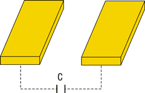
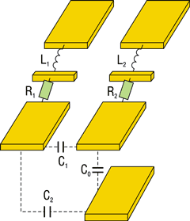
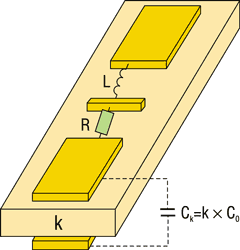
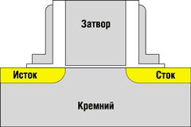
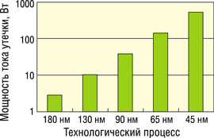
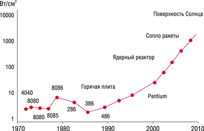

Евгений Рудометов
rudometov@mail.ru
За сравнительно короткую историю компьютеров, построенных на полупроводниковых элементах, вычислительная мощь этих устройств возросла во много тысяч раз. Этому в немалой степени способствовали эволюция архитектуры процессоров и совершенствование их внутренней структуры. Развитие полупроводниковых технологий обеспечивало постоянный рост тактовых частот и, следовательно, увеличение производительности.
Производительность процессора
С точки зрения пользователя производительность процессора - это время выполнения определенного набора команд, последовательность которых образует компьютерную программу. Чем это время меньше, тем более производительный процессор используется в системе. Это означает, что производительность можно выразить как число команд, выполняемых за такт, умноженное на тактовую частоту процессора:
Производительность = (Число команд за такт) х (Тактовая частота)
Число команд, выполняемых за такт, зависит как от программы, так и от архитектуры процессора (в частности, от того, с каким набором машинных команд способен работать процессор и как он это делает). На уровне процессора одна команда программы преобразуется в несколько машинных инструкций, или элементарных команд, причем эффективность такого преобразования зависит и от архитектуры процессора, и от того, оптимизирован ли программный код под конкретную архитектуру процессора. Кроме того, в некоторых процессорных архитектурах элементарные команды могут исполняться параллельно.
Кстати, из вышесказанного должно быть ясно, что некорректно сравнивать производительность процессоров разной архитектуры, основываясь только на их тактовой частоте. Вот почему при одной и той же тактовой частоте одни приложения более эффективно выполняются, например, на процессорах Intel, а другие - на процессорах AMD. Однако если рассматривать одно и то же семейство процессоров с одинаковой архитектурой, то сравнивать их производительность, исходя из тактовой частоты процессора, вполне корректно.
Итак, для повышения производительности целесообразно повышать тактовую частоту процессора, точнее, полупроводникового кристалла - ядра процессора, определяющего его возможности.
Каждый процессор рассчитан именно на заявленную для него частоту, и это не прихоть производителя, а объективная реальность. Конечно, изначально процессоры одной модельной линейки изготавливаются по одной и той же технологии, в одних и тех же условиях и на одной и той же технологической линии. Однако на любом производстве в силу различных обстоятельств возникают отклонения от заданных норм, в результате чего микросхемы процессоров имеют несколько отличающиеся друг от друга характеристики. Для выявления последствий отклонений существуют технический контроль и тестирование продукции.
Безусловно, тестировать каждый кристалл на всех многочисленных этапах его изготовления, учитывая масштабы подобного производства, невозможно. Именно поэтому, как правило, проводится выборочное тестирование изделий из каждой партии готовой продукции. В ходе тестирования выявляется способность процессоров работать на той или иной частоте, после чего вся партия процессоров маркируется в соответствии с данной частотой. Остается вероятность того, что конкретный процессор не прошел выборочного тестирования и способен поддерживать несколько большую частоту, чем указано на маркировке. Кроме того, производитель закладывает некоторый "запас прочности", учитывающий статистический разброс параметров, поскольку невозможно обеспечить 100%-ную повторяемость производственных процессов. В результате большая часть процессоров, попадающих в руки пользователей, могут успешно работать на повышенных частотах. Однако, признавая возможность нештатных режимов, следует подчеркнуть, что подобные режимы нельзя рекомендовать для корпоративного сегмента.
Впрочем, по мере совершенствования технологий выпуска процессоров статистический разброс параметров уменьшается. Это позволяет не только сократить задаваемый производителем "запас прочности", но и постепенно выпускать в рамках тех же технологических возможностей все более производительные модели. Тем не менее резерв технологии постепенно исчерпывается, и, несмотря на совершенствование внутреннего дизайна ядра, выпуск новых моделей верхнего частотного диапазона дается все труднее.
И все же, что мешает безграничному росту частоты работы внутренних структур полупроводникового ядра процессора, какие эффекты или физические процессы препятствуют этому?
Чтобы ответить на этот вопрос, напомним, что современные процессоры настольных компьютеров состоят из десятков миллионов элементов. Эти элементы представлены полевыми транзисторами, изготовленными по специальной технологии КМОП (комплементарная логика на основе технологии металл-оксид-полупроводник, CMOS). Более того, полупроводниковое ядро Northwood, выпускаемое по технологии 130 нм, на котором построено множество моделей процессора Intel Pentium 4, уже имеет в своем составе 55 млн транзисторов. Однако в сменяющем его ядре Prescott (технология 90 нм) число транзисторов на несколько десятков миллионов больше - оно достигло астрономического значения в 125 млн.
Здесь следует отметить, что параметры транзисторов в значительной степени зависят от их типоразмеров. Изменение же типоразмеров определяется эволюцией технологических процессов, в соответствии с которыми выпускаются процессоры (они описаны в табл. 1). Основной параметр, характеризующий техпроцесс, - это масштаб технологии, который и определяет размеры полупроводниковых элементов, составляющих основу внутренних цепей процессоров (эти цепи состоят из соответствующим образом соединенных между собой транзисторов). Совершенствование технологии и пропорциональное уменьшение размеров транзисторов способствуют улучшению их параметров, важнейший из которых - скоростные свойства.
Таблица 1. Эволюция технологических процессов Intel
| Процесс | Год внедре-ния | Лито-графия, нм | Пластина Si, мм | Межсоеди-нения | Длина затвора, нм | Диэлектрик затвора | Канал |
| P854 | 1995 | 350 | 200 | Al | 350 | SiO2 | Si |
| P856 | 1997 | 250 | 200 | Al | 200 | SiO2 | Si |
| P858 | 1999 | 180 | 200 | Al | 130 | SiO2 | Si |
| Px60 | 2001 | 130 | 200/300 | Cu | 70 | SiO2 | Si |
| P1262 | 2003 | 90 | 300 | Cu | 50 | SiO2 | Strained Si |
| P1264 | 2005 | 65 | 300 | Cu | 30 | SiO2 | Strained Si |
| P1266 | 2007 | 45 | 300 | Cu | 20 | High k | Strained Si |
| P1268 | 2009 | 32 | 300 | Cu | 15 | High k | Strained Si |
При уменьшении длины затвора (Х) в М раз соответствующим образом изменяются частота и плотность размещения транзисторов (табл. 2).
Таблица 2. Связь параметров транзисторов с их типоразмерами
| Параметр | Вид зависимости |
| Длина затвора X | 1/M |
| Ширина затвора Y | 1/M |
| Толщина затвора Z | 1/M |
| Плотность размещения | M*M |
| Частота работы | M |
| Напряжение | 1/M |
Взаимовлияние проводников
Размеры каждого из транзисторов, входящих в состав процессорного ядра Prescott, уже меньше всем известного вируса гриппа. Более сотни миллионов микроскопических транзисторов, соединенных определенным образом между собой, сосредоточены на чрезвычайно малой площади и работают на частотах, нередко превышающих 10 ГГц. Очевидно, что все эти элементы оказывают друг на друга взаимное негативное влияние. Это легко проиллюстрировать на примере двух расположенных рядом проводников, соединяющих элементы в ядре процессора (рис. 1).
|  | Рис. 1. Два расположенных рядом проводника, соединяющих элементы в ядре.
|
Эти проводники обладают взаимной емкостью C. Она, как известно, зависит от расстояния между проводниками и площади обращенных друг к другу сторон по известной формуле:
C = k x S/d,
где S - площадь, d - расстояние между проводниками, k - коэффициент, смысл которого мы поясним ниже.
На высоких частотах образованный проводниками конденсатор обладает проводимостью (хотя для постоянного тока такое расположение соответствует надежному изолятору); как следствие, появляются неконтролируемые токи. Конечно, оценивая поведение приведенной схемы на высоких частотах, нельзя не заметить, что размеры проводников малы, но мало и расстояние между ними. Учитывая же значения частот и число таких проводников, составляющее многие миллионы, можно уверенно утверждать, что их влиянием на частотные свойства внутренних структур процессорного ядра нельзя пренебрегать.
Следует еще принять во внимание то обстоятельство, что каждый проводник обладает и активным сопротивлением, и индуктивностью. А это означает, что эквивалентная схема двух проводников представляет собой совокупность емкостей, резисторов и индуктивностей. Очевидно, что она обладает свойствами интегрирующей схемы с многочисленными резонансами. Более того, в реальной жизни необходимо учитывать взаимное влияние нескольких проводников друг на друга. Это иллюстрирует рис. 2, на котором представлена схема трех проводников.
|  | Рис. 2. Три расположенных рядом проводника, соединяющих элементы в ядре.
|
Нет, вероятно, необходимости доказывать, что частотные свойства такой системы много сложнее простого варианта с двумя проводниками. Остается добавить, что и активные (сопротивления), и реактивные (емкости, индуктивности) составляющие полного импеданса распределены по всей длине проводников. Это многократно усложняет описание и поведение подобных систем на высоких частотах. Причем ситуация становится еще сложнее, если вспомнить, что описанная система работает не в вакууме и между проводниками находятся вещества, обладающие определенными диэлектрическими параметрами, которые влияют на величины взаимных емкостей. Более того, поскольку диэлектрическая проницаемость используемых в микросхемах материалов больше единицы, величины взаимной емкости по сравнению с предыдущими случаями соответствующим образом увеличиваются. Примерная схема, учитывающая влияние диэлектриков, приведена на рис. 3.
|  | Рис. 3. Схема для двух проводников, учитывающая влияние диэлектриков.
|
Из рис. 3 должно быть ясно, почему конструкторы стремятся использовать для изоляции элементов полупроводниковых микросхем материалы с меньшей величиной диэлектрической проницаемости (k).
Остается добавить, что высокочастотные параметры описанных схем зависят от многих факторов. Достаточно назвать, например, геометрические размеры проводников, их взаимное расположение, состав металлов и окружающих диэлектриков, микроскопические дефекты. Любые вариации этих параметров порождают соответствующие изменения в частотных свойствах. Кстати, это одна из причин, по которым производители закладывают "запас прочности" в сложные высокочастотные изделия.
Влияние транзисторов
Кроме топологии проводников, необходимо учитывать и влияние самих транзисторов, структура которых (рис. 4) и физическая суть много сложнее отдельных проводников, хотя бы потому, что это активные элементы. Однако транзисторы не только управляют текущими через них электротоками, выполняя функции быстродействующих электронных ключей; они еще и выступают как мощные источники электромагнитного излучения. При этом, оказывая электромагнитное воздействие на соседние элементы, они и сами испытывают аналогичное влияние от соседних цепей. Входящие же в состав транзисторов p-n-переходы способны детектировать наведенные токи, усиливать их и затем передавать.
|  | Рис. 4. Структура традиционного КМОП-транзистора.
|
К слову сказать, довольно трудно точно описать электромагнитный фон внутри кристаллов процессоров, который из-за тесной упаковки элементов характеризуется переменными полями очень высокой напряженности. Эти поля образуют сложную структуру, непрерывно изменяющуюся в соответствии с разными частотами работы внутренних структур процессора. При этом образуются переменные максимумы и минимумы на разных участках полупроводникового кристалла, картина которых постоянно меняется в соответствии с выполняемыми операциями.
Общая картина многократно усложняется, если учесть, что размеры транзисторов уже достигли тех значений, когда все большее влияние начинают оказывать квантовые эффекты, способствующие увеличению неконтролируемых токов. Общий их поток складывается из токов, порождаемых неидеальностью изоляции, а также токов утечки различной природы через межэлементные емкости и даже за счет туннельного эффекта.
Таким образом, результатом миниатюризации полупроводниковых элементов, составляющих основу электронных схем на полупроводниковых кремниевых кристаллах и работающих на сверхвысоких частотах в условиях значительных электромагнитных помех, оказывается стремительный рост токов утечки (рис. 5).
|  | Рис. 5. Рост мощности тока утечки из-за уменьшения типоразмеров транзисторов CMOS (по данным Intel).
|
Здесь следует напомнить, что для сохранения устойчивости работы электронных схем токи, контролируемые работающими элементами, должны быть больше неуправляемых токов утечки. В результате негативных явлений, порождаемых процессами миниатюризации, неуправляемые токи, основу которых составляют токи утечки, а также паразитные токи, связанные с ростом частоты переключения транзисторов, увеличивают теплообразование процессоров. В итоге, несмотря на уменьшение напряжения питания, достигнутое благодаря уменьшению типоразмеров транзисторов, ожидаемого существенного уменьшения теплообразования не происходит.
Доля неконтролируемой части электрического тока довольно велика и увеличивается с ростом частоты. Это еще одна причина, заставляющая производителей придавать своим полупроводниковым изделиям "запас прочности".
Новые материалы
Борясь с ростом негативных тенденций в электронных схемах, реализованных в кристаллах процессоров и других микросхемах, специалисты обращаются к новым технологиям. В качестве примера можно привести использование медных проводников вместо алюминиевых, материалов с низкими показателями диэлектрической проницаемости - low k, технологий напряженного кремния - Strained Si и кремния-на-изоляторе (Silicon on Insulator, SOI).
Замена алюминия медью для соединяющих транзисторы проводников обеспечила снижение потерь при передаче сигналов. Это уменьшило тепловыделение в целом, позволив увеличить тактовые частоты процессора.
Использование материалов с низкой диэлектрической проницаемостью для изоляции внутренних цепей, включая соединяющие проводники, снижает значения паразитных межэлементных емкостей. Напряженный же кремний предназначен для уменьшения сопротивления канала исток-сток. Связано это с тем, что в напряженном кремнии больше расстояние между атомами кристаллической решетки, а следовательно, меньше сопротивление потоку электронов, что, в свою очередь, уменьшает тепловыделение. На борьбу с тепловыделением направлена и технология SOI, обеспечивающая снижение паразитных токов через подложку.
Аналогичную цель, но только относительно цепей затворов, преследует и применение материалов с high k. Эти материалы планируется использовать в качестве изолирующих слоев затворов транзисторов взамен традиционно применяемой пленки диоксида кремния. Толщина этой пленки сейчас уже менее десяти атомов, что вызывает значительный неуправляемый ток утечки. Использование новых материалов позволит уменьшить ток утечки примерно в 1000 раз. С той же целью в дополнение к материалам high k предполагается заменить поликристаллические затворы на металлические. В дальнейшем же следует ожидать применения так называемых трехзатворных структур и терагерцевых транзисторов.
Эти нововведения позволят продолжить процесс миниатюризации элементов, наращивая плотность размещения транзисторов на полупроводниковых кристаллах и их частотный потенциал. Рост плотности позволяет увеличивать от поколения к поколению число транзисторов, составляющих ядро процессора. Данный массив служит ресурсом разработчиков и соответственно источником увеличения потенциальных возможностей компьютерных комплектующих. Рост массива транзисторов происходит в соответствии с эмпирическим законом Мура.
Тепловая мощность
Для компенсации негативных явлений и обеспечения устойчивой работы процессоров на высоких тактовых частотах производителям приходится увеличивать напряжение питания ядер. В этом легко убедиться, сравнив уровни штатных напряжений питания для младших и старших моделей процессоров: независимо от технологии их производства и архитектуры у старших моделей одной линейки напряжение питания ядра и мощность теплообразования всегда выше. Однако такое увеличение, как правило, не вызывает существенного сокращения сроков работы процессоров из-за ускоренной деградации полупроводников.
Необходимо отметить, что в последние годы тепловая мощность имеет тенденцию расти даже в штатных режимах работы процессоров - несмотря на то, что конструкторы в борьбе за ее снижение совершенствуют внутренние структуры процессоров и стараются уменьшить напряжение питания ядра. К слову сказать, понижение уровней питания стало возможным благодаря уменьшению геометрических размеров транзисторов и, как следствие, размеров их затворов. Действительно, током исток-сток (source-drain) управляет поле затвора (gate), а чем тоньше затвор, тем меньшее напряжение необходимо на нем для поддержания требуемой напряженности поля.
В дополнение к этому уменьшение длины канала сопровождается снижением потерь, включая джоулево тепло. Улучшению параметров способствуют и новейшие разработки в области топологии транзисторов.
Совершенствование архитектуры процессоров и технологических процессов их производства обеспечивает экспоненциальный рост тактовых частот и вычислительной мощности процессоров. К сожалению, у этих достижений есть и обратная сторона - сравнительно быстрое увеличение теплообразования процессоров. Учитывая же тот факт, что площадь кристалла процессора остается практически постоянной, рост теплообразования способствует увеличению плотности энергии (рис. 6). Высокая же мощность теплообразования в случае неадекватных средств охлаждения сопровождается перегревом внутренних структур процессора, что негативно сказывается на его работоспособности, усиливает и ускоряет процессы деградации полупроводников.
|  |
| Рис. 6. Рост плотности энергии в кристалле процессора (по данным Intel).
|
Действительно, из физики известно, что полупроводники крайне чувствительны к увеличению температуры. При повышении температуры растет средняя энергия колебания атомов в кристалле; в результате все больше связей в кристаллической решетке кремния начинает разрываться, появляются все новые пары электронов и дырок. Начиная с определенного момента свойства полупроводника меняются: например, с ростом температуры проводимость полупроводников и диэлектриков возрастает. Как следствие, возникают сбои и повторяющиеся зависания. Именно по этой причине так необходимы адекватные средства поддержания оптимальных температурных режимов. Сейчас уже ни один высокочастотный процессор не обходится без соответствующих кулеров, в составе которых применяются массивные радиаторы и мощные охлаждающие вентиляторы. Логично предположить, что, предприняв специальные меры для охлаждения процессора, можно добиться стабильной работы микросхем, рассчитанных на комнатную температуру, - причем на тактовых частотах, значительно превышающих "штатные". Подобные - как правило, не слишком афишируемые меры - применялись, в частности, на Форуме IDF при демонстрациях возможностей перспективных технологий, лежащих в основе высокопроизводительных процессоров.
Возвращаясь к проблеме теплообразования, отметим, что, к сожалению, повышение напряжения питания и тактовой частоты увеличивает тепловую мощность. А это сопровождается рядом негативных явлений, среди которых и локальные, и общий перегревы полупроводникового кристалла со всеми вытекающими отсюда последствиями. Кроме того, нельзя сбрасывать со счетов и повышенный уровень энергопотребления, тяжким бременем ложащийся на источники электропитания компьютерных систем, и потребность в мощных средствах охлаждения, и т. д. и т. п.
Стремясь снизить энергопотребление, конструкторы стали встраивать в состав архитектуры ядер специальные цепи, регулирующие работу процессоров. Такие цепи, функционирование которых поддерживается системным ПО, в зависимости от вычислительной нагрузки и условий эксплуатации обеспечивают оптимальные электрические и частотные режимы. Это, в частности, означает, что в случае снижения вычислительной нагрузки тактовая частота работы ядра уменьшается.
Кстати, при снижении тактовой частоты процессора ниже штатного значения напряжение питания его ядра может быть соответствующим образом снижено без нарушения устойчивости работы системы. Такие операции, выполняемые в автоматическом режиме аппаратно-программным обеспечением и предназначенные для экономии энергии батарей, уже стали стандартными для портативных компьютеров. Теперь же понижение напряжения и частоты используется и для моделей серверного сегмента. В качестве иллюстрации можно упомянуть реализованные в недавно выпущенных по 90-нм техпроцессу моделях Intel Xeon (ядро Nocona) технологии Demand Based Switching (DBS) и Enhanced Intel SpeedStep - динамической регулировки и снижения потребляемой мощности процессора.
Для оценки эффективности подобных технологий в плане снижения тепловой нагрузки на ядро процессора воспользуемся следующей формулой:
P = C x V2 x F,
где P - тепловая мощность процессора, С - коэффициент, учитывающий взаимную емкость элементов ядра процессора и зависящий от архитектуры ядра (обычно возрастает с увеличением плотности размещения элементов на кристалле микросхемы), V - напряжение питания ядра, F - тактовая частота.
Данную формулу можно привести к виду:
Pk= P0 x (Vk/V0)2 x (Fk/F0),
где переменные с индексом k - это соответствующие параметры изменяемых режимов, а с индексом 0 - параметры штатного режима.
Согласно этой формуле, уменьшение тактовой частоты и напряжения питания ядра на 5% обеспечивает снижение мощности теплообразования почти на 15%. Уменьшение же тактовой частоты на 10%, а напряжения питания на 7% приводит к снижению энергопотребления, а следовательно, и теплообразования почти на четверть.
Остается добавить, что расширение частотного и энергетического диапазонов регулирования приводит к дальнейшему уменьшению уровня теплообразования. А это, в свою очередь, еще больше снижает тепловую нагрузку на полупроводниковый кристалл процессора и средства охлаждения и электрическую нагрузку на элементы энергопитания. Кроме того, благодаря уменьшению температуры внутри корпуса улучшаются условия эксплуатации остальных компонентов системы. Кстати, в мобильных системах такой подход позволяет уменьшать энергопотребление в несколько раз.
В заключение отметим, что, несмотря на все барьеры на пути повышения производительности компьютерных систем, ученые и инженеры предлагают различные пути решения возникающих проблем. Это и улучшение полупроводниковых техпроцессов, и совершенствование архитектуры микросхем, и внедрение новых материалов, и даже поиск способов модификации конструктивов системных блоков.
Кстати, в 1991 г. стартовал совместный проект Intel и NCR по "промышленному температурному разгону", известный как Cheetah. Именно портфель патентов, зарегистрированных в рамках проекта, позже перешел в распоряжение шести инженеров из NCR, основавших фирму KryoTech. В дальнейшем эти разработки позволили специалистам KryoTech создать целую серию установок, обеспечивающих эффективное охлаждение серверных процессоров, эксплуатируемых в форсированных режимах, за счет помещения их вместе с системными платами в морозильные камеры. Однако это тема уже другой статьи.